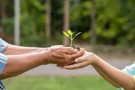
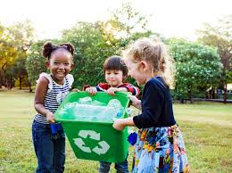

.jpg)
Lingkungan merupakan elemen penting dalam kehidupan yang menyediakan kebutuhan dasar manusia, seperti udara bersih, air, dan tanah subur. Namun, aktivitas manusia yang tidak ramah lingkungan, seperti pembukaan lahan secara besar-besaran, penggunaan bahan bakar fosil berlebihan, dan pembuangan sampah sembarangan, telah menyebabkan kerusakan lingkungan yang serius. Pemanasan global, pencemaran, dan kerusakan ekosistem menjadi ancaman nyata yang berdampak pada kesehatan, keberlanjutan sumber daya alam, serta stabilitas ekosistem global. Indonesia sebagai negara dengan keanekaragaman hayati yang tinggi turut menghadapi masalah ini, mulai dari deforestasi hingga pencemaran sungai. Fenomena ini tidak hanya merugikan lingkungan, tetapi juga mempengaruhi kualitas hidup manusia dan makhluk hidup lainnya. Kesadaran akan pentingnya menjaga lingkungan kini menjadi kebutuhan yang mendesak. Berbagai inisiatif global, seperti Tujuan Pembangunan Berkelanjutan (Sustainable Development Goals/SDGs), menekankan pentingnya pelestarian lingkungan sebagai bagian dari upaya menciptakan dunia yang lebih baik bagi generasi mendatang. Di tingkat lokal, langkah kecil seperti mengurangi penggunaan plastik, menanam pohon, dan menghemat energi dapat memberikan dampak besar jika dilakukan secara kolektif. Dengan melibatkan peran individu, masyarakat, dan pemerintah, pelestarian lingkungan tidak hanya menjadi tanggung jawab, tetapi juga sebuah investasi untuk masa depan yang lebih berkelanjutan.
Menjaga lingkungan merupakan tanggung jawab bersama yang melibatkan peran individu dan masyarakat secara kolektif.